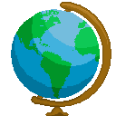

Conteúdo:: Deriva continental, Tectônica de placas, isostasia, Correntes de Convecção,
tipos de falhas tectônicas.
Objetivo: : Entender os processos de separação dos continentes terrestres por meio da teoria
da deriva continental e tectônica de placas.
Digite seu nome
Introdução
Na aula passada, vimos como o sensoriamento remoto, o
geoprocessamento e a cartografia digital alteraram profundamente a maneira como conhecemos a superfície
terrestre.
Ao final, com ajuda dos exercícios, você será capaz de distinguir as camadas internas da
Terra e as eras geológicas que duraram milhões de anos.
Geotecnologia
Cartografia
(1) Equipamentos para estudar o espaço terrestre
( ) Legenda
(2) Aquisição de imagens de satélite
( ) GPS
(3) posicionamento por satélites
( ) Sensoriamento remoto
(4) Representação x Real
( ) Escala
(5) Cores e símbolos
( ) SIG
Placa Euroasiática, predominantemente continental, apesar de incluir parte do Atlântico Norte;
Placa Africana, que inclui a África e parte do Atlântico Sul;
Placa Norte-Americana, que abrange parte do Atlântico Norte e quase toda a América do Norte;
Placa Sul-Americana, que inclui a América do Sul e parte do Atlântico Sul;
Placa Antártica, que inclui o continente antártico e uma imensa área oceânica;
Placa Indo-Australiana, que abrange boa parte do oceano Índico e da Oceania;
Placa do Pacífico, predominantemente oceânica;
Placa de Nazca, a oeste da América do Sul,
predominantemente oceânica.
Teste seu conhecimento
Assinale todas as alternativas que satisfazem as características da projeção de Mercator:

Teste seu conhecimento
Não existe pergunta boba! A Ciência é feita de perguntas!
P:
R:
P:?
R:
P:
R:
Desafio em grupo: Exposição de ideias sobre a dinâmica do Planeta Terra.
Escolha um período ou um fato marcante apresentado nas Eras geológicas da Terra e
apresenta
três argumentos sobre a importância do conhecimento das dinâmicas do Planeta atualmente.
Instruções
Forme um grupo com três estudantes;
Selecione os fatos e discuta com seu grupo os argumentos da questão; (5 minutos);
Escreva sua resposta à questão solicitada.
Escolha um integrante do grupo para expor a questão a turma; (1 a 2 minutos).